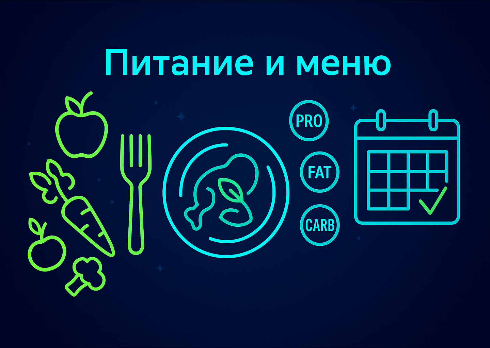
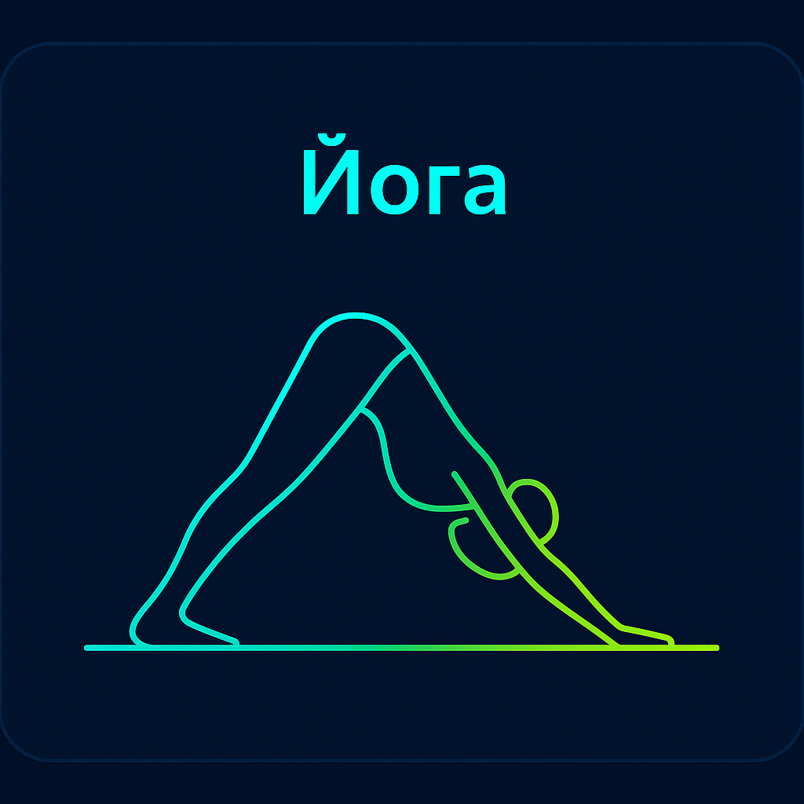

Задание 1: Техника приседаний
Цель: выровнять паттерн движения, научиться сохранять нейтраль спины, распределять вес в стопе.
- 3×8 повторений у стены (медленно)
- Видео‑самопроверка с двух ракурсов
- Заметки: ощущения в коленях/спине
На этой странице содержатся некоторые пробные задания для новичков.
Цель: выровнять паттерн движения, научиться сохранять нейтраль спины, распределять вес в стопе.
Цель: освоить диафрагмальное дыхание и базовые удержания.
Цель: повысить ежедневную активность без перегруза.


